GBA-018-R02 PC 道具列表识别范围内 · 已转录 · 可见 ポイントアップ × 5 ピーピーエイド × 3 スペシャルアップ × 1 せんせいのツメ × 1 かわらずのいし × 1 やわらかいすな × 1 スピーダー × 1 マックスアップ × 1
GBA-019-R02 背包右侧列表识别范围内 · 已转录 · 可见 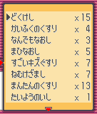どくけし × 15 かいふくのくすり × 4 なんでもなおし × 3 まひなおし × 5 すごいキズぐすり × 7 ねむけざまし × 7 まんたんのくすり × 13 たいようのいし × 1
GBA-020-R02 PC 道具列表识别范围内 · 已转录 · 可见 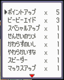ポイントアップ × 5 ピーピーエイド × 3 スペシャルアップ × 1 せんせいのツメ × 1 かわらずのいし × 1 やわらかいすな × 1 スピーダー × 1 マックスアップ × 1
GBA-022-R02 背包右侧列表识别范围内 · 已转录 · 可见 どくけし × 15 かいふくのくすり × 4 なんでもなおし × 3 まひなおし × 5 すごいキズぐすり × 7 ねむけざまし × 7 まんたんのくすり × 13 たいようのいし × 1
GBA-023-R02 背包右侧列表识别范围内 · 已转录 · 可见 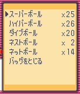スーパーボール × 25 ハイパーボール × 26 ダイブボール × 20 ネストボール × 2 ネットボール × 14 バッグをとじる
GBA-024-R02 背包右侧列表识别范围内 · 已转录 · 可见 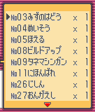No03みずのはどう × 1 No04めいそう × 1 No05ほえる × 1 No08ビルドアップ × 1 No09タネマシンガン × 1 No11にほんばれ × 1 No26じしん × 1 No27おんがえし × 1
GBA-025-R02 背包右侧列表识别范围内 · 已转录 · 可见 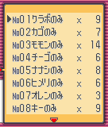No01クラボのみ × 9 No02カゴのみ × 7 No03モモンのみ × 14 No04チーゴのみ × 6 No05ナナシのみ × 8 No06ヒメリのみ × 6 No07オレンのみ × 3 No08キーのみ × 9
GBA-026-R02 背包右侧列表识别范围内 · 已转录 · 可见 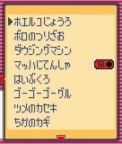ホエルコじょうろ ボロのつりざお ダウジングマシン マッハじてんしゃ SEL はいぶくろ ゴーゴーゴーグル ツメのカセキ ちかのカギ
GBA-035-R02 商店右侧商品列表识别范围内 · 已转录 · 可见 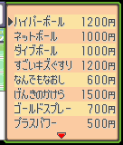ハイパーボール 1200円 ネットボール 1000円 ダイブボール 1000円 すごいキズぐすり 1200円 なんでもなおし 600円 げんきのかけら 1500円 ゴールドスプレー 700円 プラスパワー 500円
GBA-036-R02 商店右侧商品列表识别范围内 · 已转录 · 可见 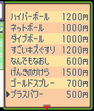ハイパーボール 1200円 ネットボール 1000円 ダイブボール 1000円 すごいキズぐすり 1200円 なんでもなおし 600円 げんきのかけら 1500円 ゴールドスプレー 700円 プラスパワー 500円
GBA-278-R01 背包右侧列表识别范围内 · 已转录 · 可见 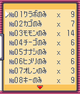No01クラボのみ × 9 No02カゴのみ × 7 No03モモンのみ × 14 No04チーゴのみ × 6 No05ナナシのみ × 8 No06ヒメリのみ × 6 No07オレンのみ × 3 No08キーのみ × 9
GBA-305-R05 能力页六项数值识别范围内 · 已转录 · 可见 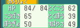のうりょく HP 84/84 とくこう 62 こうげき 65 とくぼう 39 ぼうぎょ 50 すばやさ 49
GBA-306-R04 战斗招式页列表识别范围内 · 已转录 · 可见 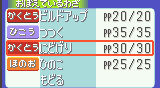おぼえているわざ かくとう ビルドアップ PP20/20 ひこう つつく PP35/35 かくとう にどげり PP30/30 ほのお ひのこ PP25/25 もどる
GBA-307-R04 战斗招式页列表识别范围内 · 已转录 · 可见 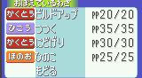おぼえているわざ かくとう ビルドアップ PP20/20 ひこう つつく PP35/35 かくとう にどげり PP30/30 ほのお ひのこ PP25/25 もどる
GBA-308-R04 华丽招式页列表识别范围内 · 已转录 · 可见 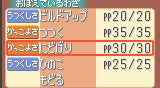おぼえているわざ うつくしさ ビルドアップ PP20/20 かっこよさ つつく PP35/35 かっこよさ にどげり PP30/30 うつくしさ ひのこ PP25/25 もどる
GBA-309-R04 华丽招式页列表识别范围内 · 已转录 · 可见 おぼえているわざ うつくしさ ビルドアップ PP20/20 かっこよさ つつく PP35/35 かっこよさ にどげり PP30/30 うつくしさ ひのこ PP25/25 もどる
GBA-312-R04 战斗招式页列表识别范围内 · 已转录 · 可见 おぼえているわざ ひこう つつく PP35/35 ひこう つばさでうつ PP35/35 ノーマル きあいだめ PP30/30 ノーマル でんこうせっか PP30/30
GBA-313-R04 战斗招式页列表识别范围内 · 已转录 · 可见 おぼえているわざ ひこう つつく PP35/35 ひこう つばさでうつ PP35/35 ノーマル きあいだめ PP30/30 ノーマル でんこうせっか PP30/30 もどる
GBA-314-R04 华丽招式页列表识别范围内 · 已转录 · 可见 おぼえているわざ かっこよさ つつく PP35/35 かっこよさ つばさでうつ PP35/35 かっこよさ きあいだめ PP30/30 かっこよさ でんこうせっか PP30/30 もどる
NGC-011-R02 PC 道具列表识别范围内 · 已转录 · 可见 ポイントアップ × 5 ピーピーエイド × 3 スペシャルアップ × 1 せんせいのツメ × 1 かわらずのいし × 1 やわらかいすな × 1 スピーダー × 1 マックスアップ × 1
NGC-012-R02 背包右侧列表识别范围内 · 已转录 · 可见 どくけし × 15 かいふくのくすり × 4 なんでもなおし × 3 まひなおし × 5 すごいキズぐすり × 7 ねむけざまし × 7 まんたんのくすり × 13 たいようのいし × 1
NGC-013-R02 背包右侧列表识别范围内 · 已转录 · 可见 No01クラボのみ × 9 No02カゴのみ × 7 No03モモンのみ × 14 No04チーゴのみ × 6 No05ナナシのみ × 8 No06ヒメリのみ × 6 No07オレンのみ × 3 No08キーのみ × 9
NGC-014-R02 背包右侧列表识别范围内 · 已转录 · 可见 No03みずのはどう × 1 No04めいそう × 1 No05ほえる × 1 No08ビルドアップ × 1 No09タネマシンガン × 1 No11にほんばれ × 1 No26じしん × 1 No27おんがえし × 1
NGC-040-R02 商店右侧商品列表识别范围内 · 已转录 · 可见 ハイパーボール 1200円 ネットボール 1000円 ダイブボール 1000円 すごいキズぐすり 1200円 なんでもなおし 600円 げんきのかけら 1500円 ゴールドスプレー 700円 プラスパワー 500円
NGC-041-R02 商店右侧商品列表识别范围内 · 已转录 · 可见 ダイブボール 1000円 すごいキズぐすり 1200円 なんでもなおし 600円 げんきのかけら 1500円 ゴールドスプレー 700円 プラスパワー 500円 ディフェンダー 550円 やめる
NGC-084-R01 背包右侧列表识别范围内 · 已转录 · 可见 No01クラボのみ × 9 No02カゴのみ × 7 No03モモンのみ × 14 No04チーゴのみ × 6 No05ナナシのみ × 8 No06ヒメリのみ × 6 No07オレンのみ × 3 No08キーのみ × 9
NGC-085-R02 背包右侧列表识别范围内 · 已转录 · 可见 No01クラボのみ × 9 No02カゴのみ × 7 No03モモンのみ × 14 No04チーゴのみ × 6 No05ナナシのみ × 8 No06ヒメリのみ × 6 No07オレンのみ × 3 No08キーのみ × 9
NGC-125-R04 战斗招式页列表识别范围内 · 已转录 · 可见 おぼえているわざ じめん マッドショット PP15/15 こおり れいとうビーム PP10/10 みず たきのぼり PP15/15 じめん どろかけ PP9/10
NGC-126-R04 战斗招式页列表识别范围内 · 已转录 · 可见 おぼえているわざ じめん マッドショット PP15/15 こおり れいとうビーム PP10/10 みず たきのぼり PP15/15 じめん どろかけ PP9/10 もどる
NGC-127-R04 战斗招式页列表识别范围内 · 已转录 · 可见 おぼえているわざ じめん マッドショット PP15/15 こおり れいとうビーム PP10/10 みず たきのぼり PP15/15 じめん どろかけ PP9/10 もどる
NGC-128-R04 华丽招式页列表识别范围内 · 已转录 · 可见 おぼえているわざ たくましさ マッドショット PP15/15 うつくしさ れいとうビーム PP10/10 たくましさ たきのぼり PP15/15 かわいさ どろかけ PP9/10
NGC-129-R04 华丽招式页列表识别范围内 · 已转录 · 可见 おぼえているわざ たくましさ マッドショット PP15/15 うつくしさ れいとうビーム PP10/10 たくましさ たきのぼり PP15/15 かわいさ どろかけ PP9/10 もどる
NGC-130-R04 华丽招式页列表识别范围内 · 已转录 · 可见 おぼえているわざ たくましさ マッドショット PP15/15 うつくしさ れいとうビーム PP10/10 たくましさ たきのぼり PP15/15 かわいさ どろかけ PP9/10 もどる
NGC-133-R04 战斗招式页列表识别范围内 · 已转录 · 可见 おぼえているわざ でんき 10まんボルト PP15/15 でんき スパーク PP20/20 でんき かみなり PP10/10 あく かみつく PP25/25
NGC-134-R04 战斗招式页列表识别范围内 · 已转录 · 可见 おぼえているわざ でんき 10まんボルト PP15/15 でんき スパーク PP20/20 でんき かみなり PP10/10 あく かみつく PP25/25 もどる
NGC-135-R04 战斗招式页列表识别范围内 · 已转录 · 可见 おぼえているわざ でんき 10まんボルト PP15/15 でんき スパーク PP20/20 でんき かみなり PP10/10 あく かみつく PP25/25 もどる
NGC-136-R04 战斗招式页列表识别范围内 · 已转录 · 可见 おぼえているわざ でんき 10まんボルト PP15/15 でんき スパーク PP20/20 でんき かみなり PP10/10 あく かみつく PP25/25 もどる
NGC-137-R04 战斗招式页列表识别范围内 · 已转录 · 可见 おぼえているわざ でんき 10まんボルト PP15/15 でんき スパーク PP20/20 でんき かみなり PP10/10 あく かみつく PP25/25 もどる
NGC-138-R04 华丽招式页列表识别范围内 · 已转录 · 可见 おぼえているわざ かっこよさ 10まんボルト PP15/15 かっこよさ スパーク PP20/20 かっこよさ かみなり PP10/10 たくましさ かみつく PP25/25 もどる
NGC-139-R04 华丽招式页列表识别范围内 · 已转录 · 可见 おぼえているわざ かっこよさ 10まんボルト PP15/15 かっこよさ スパーク PP20/20 かっこよさ かみなり PP10/10 たくましさ かみつく PP25/25 もどる
NGC-140-R04 华丽招式页列表识别范围内 · 已转录 · 可见 おぼえているわざ かっこよさ 10まんボルト PP15/15 かっこよさ スパーク PP20/20 かっこよさ かみなり PP10/10 たくましさ かみつく PP25/25 もどる
NGC-141-R04 华丽招式页列表识别范围内 · 已转录 · 可见 おぼえているわざ かっこよさ 10まんボルト PP15/15 かっこよさ スパーク PP20/20 かっこよさ かみなり PP10/10 たくましさ かみつく PP25/25